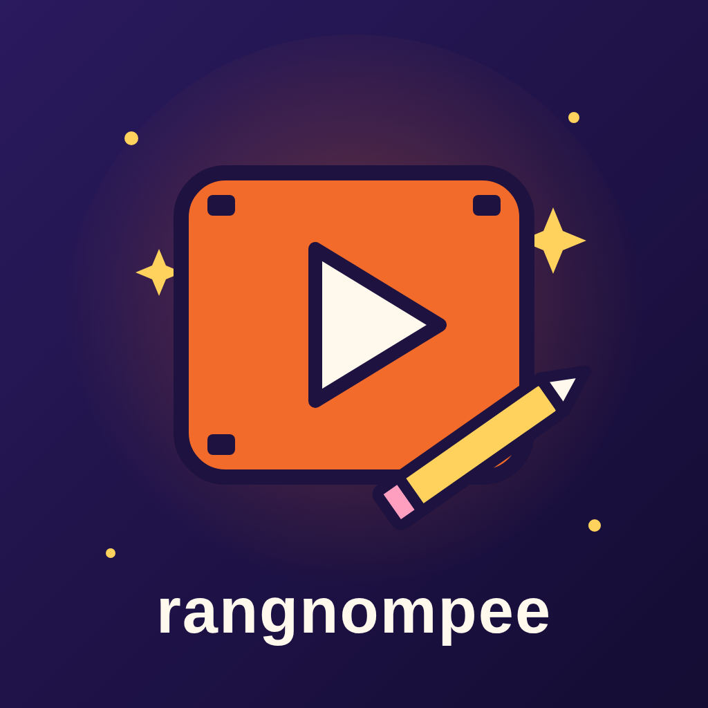

Privacy Policy
This policy explains what data rangnompee Studio ("the Service") handles when you connect your TikTok account.
1. Data we access
- Basic profile (scope
user.info.basic): your TikTok open ID, display name and avatar. Used only to show which account is connected before posting. - Access tokens: the tokens TikTok issues after you sign in. Used only to publish the videos you approve.
- Posting settings: the creator information TikTok returns (such as allowed privacy levels), used to show posting options.
2. Data we do not access
The Service does not read your followers, messages, other users' data, or your existing videos.
3. How data is stored
All data is stored only on the computer where the Service runs. We do not operate a server that collects your data, and we do not sell, rent or share your data with anyone.
4. Third-party services
To publish videos, the Service sends the approved video and caption to TikTok. To create videos, the Service sends topic text and scripts to AI providers (Anthropic and Google) for script writing and narration. No TikTok account data is sent to these providers.
5. Retention and deletion
Tokens are kept until you disconnect. You can revoke access at any time in your TikTok app settings; the Service then deletes its stored tokens on next run. You can also ask us to delete data using the contact below.
6. Children
The Service is not intended for anyone under 18.
7. Changes
We may update this policy. The effective date above shows the latest version.
8. Contact
Privacy questions or deletion requests: CONTACT_EMAIL